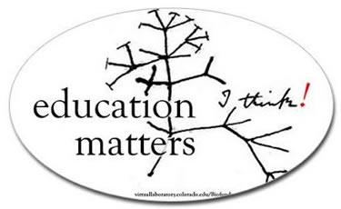

about |
|
What is biofundamentals?Biofundamentals is a transformed, two semester introductory biology curriculum, developed by an interdisciplinary team of a molecular biologist and a chemist. Its development has been spurred by experiences in course design and outcomes evaluation in the Chemistry, Life, the Universe & Everything (CLUE) project. Modern biology is a dauntingly complex subject, often taught more as a vocabulary lesson than as a conceptually coherent subject. We approach biology differently; we scaffold the materials presented around the three foundational theories in biology: the theory of evolution, the cell theory, and the physicochemical theory of life. Connecting these theories is the fact that that living systems are organized around, and based upon, interaction networks acting at various hierarchical levels from the molecular and cellular to the evolutionary and ecological. As supported by recent science education research, the course is based on a Socratic, what is often termed "flipped", approach in which students are called on to work through various exercises before and in class, which mini-lectures presence as needed, based on the text book. The course emphasizes the roles of molecular machines in carrying out various biological behaviors. The materials developed include a text (supplied free to students), class support materials, and formative and summative assessment materials. While the evaluation of learning outcomes is not as extensive as CLUE (in part because of the lack of national assessments, such as the ACS exams), we have circumstantial evidence for learning improvements and are eager to collaborate with others interested in comparing the efficacy of the biofundamentals curriculum with their existing curriculum. |
About the authorsMichael Klymkowsky, Ph.D.Mike Klymkowsky is a Professor of Molecular, Cellular, and Developmental Biology at the University of Colorado-Boulder. His current research interests include biology education, course & curriculum design; previously he focussed on studing molecular and cellular processes usng the clawed frog Xenopus. | Melanie M. Cooper, Ph.D.Professor Melanie Cooper leads a team of chemistry education researchers at Michigan State University, where she is a professor of Chemistry, Lappan-Phillips Professor of Teacher Education, and a member of the CREATE for STEM Institute. | Cooper Research Group Both Drs. Klymkowsky and Cooper are winners of the Best Professor of the year award from the Society of College Science Teachers.  |
Text © Michael Klymkowsky & Melanie Cooper – 2010-2023 all rights reserved |